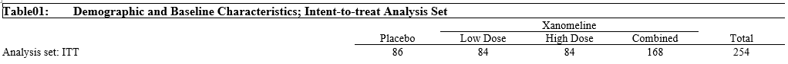
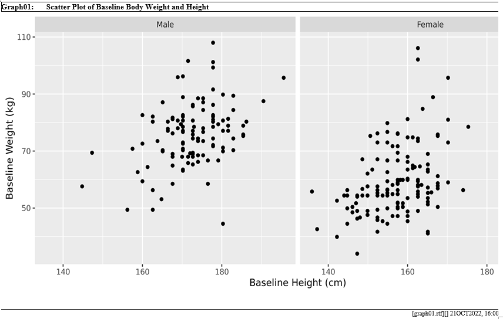

Overview of TLG Programming
tidytlg provides a framework of creating TLG outputs for
clinical study report. The TLG programming workflow includes the
following steps:
- Prep environment: set up the R environment for the I/O paths.
- Process data: filter analysis data, perform data manipulation (e.g. convert character variable to factor), and define column variable.
- Generate results: create analysis rows of summary statistics (for tables) or plots (for graphs).
- Output results: output analysis results in designated format such as
rtforhtml.
We will illustrate the above steps by creating a demographic table first, and then follow by examples of creating listing and graph.
Prep environment
To set up the R environment, you can set the path objects of the
input folder and output folder consistently for all TLG programs. The
analysis datasets and other required inputs such as the titles file and
column metadata file are placed in the input folder, while the output
folder will be used to store the output files. The envsetup
package can be used to set up the R environment for TLG programming.
titles and footnotes
The information for titles and footnotes for each TLG can be stored
in an excel file called titles.xls (see below snapshot),
which will be used later to create the outputs.

Column metadata
Column metadata provides the column structure of the table layout and includes the following variables:
-
tbltype: identifier used to group a table column layout -
coldef: distinct variable values used, typically numeric and typically a treatment variable, thinkTRT01PN -
decode: decode ofcoldefthat will display as a column header in the table -
span1: spanning header to display across multiple columns (the lowest level) -
span2: spanning header to display across multiple columns, second level -
span3: spanning header to display across multiple columns, third level
Please see below for a snapshot of
column_metadata.xlsx.

Different types of column layouts identified by different
tbltype can be stored in an excel file called
column_metadata.xlsx. Within each tbltype, the
coldef variable defines the order of the column based on
the column variable used for creating the output (typically the numeric
treatment variable, TRT01PN, is used as the column
variable). For example, there are 3 columns for tbltype =
“type1” in the above snapshot and the column layout is defined as
follows: the first column of summary statistics represents the treatment
group of TRT01PN = 0 with the column header of
Placebo defined by decode, the second and
third columns represent the Low Dose and
High Dose groups respectively with the spanning header of
Xanomeline defined by the span1 variable.
Users can also include the column that is derived from combination of
individual columns. For example, the tbltype of
type3 include the fourth column of combined
Low Dose and High Dose as well as the fifth
column of total group. Please see below for the snapshot of column
headers defined by type3.

We will use the adsl data from the PHUSE
Test Data Factory to illustrate the creation of a demographic
table.
# Prep Environment -------------------------------------------------------------
library(dplyr)
library(haven)
library(tidytlg)
# read adsl from PhUSE test data factory
testdata <- "https://github.com/phuse-org/TestDataFactory/raw/refs/heads/main/Updated/TDF_ADaM/adsl.xpt"
adsl <- read_xpt(url(testdata))Process data
Before generating analysis summary, the analysis data need to be processed first as shown in the code below.
# Process Data -----------------------------------------------------------------
adsl <- adsl %>%
filter(ITTFL == "Y") %>%
mutate(
SEX = factor(
SEX,
levels = c("M", "F", "U"), labels = c("Male", "Female", "Unknown")
)
) %>%
tlgsetup(
var = "TRT01PN",
column_metadata_file = system.file(
"extdata/column_metadata.xlsx",
package = "tidytlg"
),
tbltype = "type3"
)The above code perform the tasks below:
- filtering analysis population
- convert the
SEXvariable from character type to factor type. So all the factor levels ofSEXwill be displayed in the analysis summary even there are no records for the factor level of “Unknown”. - create the column variable,
colnbr, through thetlgsetupfunction call:tlgsetupis using the numeric treatment variable (e.g.TRT01PN) to match withcoldefin column metadata defined bycolumn_metadata_fileandtbltypeto create the column variable,colnbr, inadslfor reflecting the column layout. Please see thevignette("tlgsetup")for more details. The column variable,colnbr, will be used in the subsequent analysis function calls for creating analysis results.
If you need multiple analysis datasets for creating TLG,
tlgsetup will need to be applied to each dataset.
Therefore, you will have a consistent column variable of
colnbr for creating analysis summary.
Generate results
tidytlg provides 3 functions, univar,
freq, and nested_freq, to generate analysis
summary of descriptive statistics (univariate statistics and count
(percentages)). For more details, please see the frequency analysis
vignette("freq") and the univariate statistical analysis
vignette("univar").
# Generate Results -------------------------------------------------------------
## Analysis set row
t1 <- adsl %>%
freq(
colvar = "colnbr",
rowvar = "ITTFL",
statlist = statlist("n"),
subset = ITTFL == "Y",
rowtext = "Analysis set: ITT"
)
## Univariate summary for AGE
t2 <- adsl %>%
univar(
colvar = "colnbr",
rowvar = "AGE",
statlist = statlist(c("N", "MEANSD", "MEDIAN", "RANGE", "IQRANGE")),
decimal = 0,
row_header = "Age, years"
)
## Count (percentages) for SEX
t3 <- adsl %>%
freq(
colvar = "colnbr",
rowvar = "SEX",
statlist = statlist(c("N", "n (x.x%)")),
row_header = "Gender"
)The above function calls generate the requested analysis rows for the
table output sequentially and store the results in individual objects
(i.e. t1, t2, t3). The next step
is to combine analysis results into a single tbl dataframe
through the bind_table function call.
# Format Results ---------------------------------------------------------------
tbl <- bind_table(t1, t2, t3,
column_metadata_file = system.file(
"extdata/column_metadata.xlsx",
package = "tidytlg"
),
tbltype = "type3"
)The above bind_table function call performs the
following tasks:
- bind the analysis rows from
t1,t2,t3intotbl - add formatting variables (
indentme,newrows,newpage), which will be used in thegentlgfunction call below for creating the output. - attach the column metadata specified by
column_metadata_fileandtbltypeas an attribute of thetbl. So the column header and the spanning headers (i.e.decode,span1,span2,span3) defined in the column metadata can be used automatically in thegentlgfunction call.
Output results
The tbl data frame is the main input to the
gentlg function for creating the RTF/HTML outputs.
The basic structure of tbl includes label,
col1, col2, ...,
coln, where:
-
label: row text displayed on the first column of the table -
col1: statistic results displayed on the second column of the table -
col2: statistic results displayed on the third column of the table.
All other columns contain formatting instructions to create the
RTF/HTML outputs. For tweaking the formatting variables to customize the
table layout, please see the vignette("tbl_manipulation")
for more details.
knitr::kable(tbl)| label | col1 | col2 | col3 | col4 | col5 | row_type | anbr | indentme | roworder | newrows | newpage |
|---|---|---|---|---|---|---|---|---|---|---|---|
| Analysis set: ITT | 86 | 84 | 84 | 168 | 254 | HEADER | 1 | 0 | 1 | 0 | 0 |
| Age, years | HEADER | 2 | 0 | 1 | 1 | 0 | |||||
| N | 86 | 84 | 84 | 168 | 254 | N | 2 | 1 | 2 | 0 | 0 |
| Mean (SD) | 75.2 (8.59) | 75.7 (8.29) | 74.4 (7.89) | 75.0 (8.09) | 75.1 (8.25) | VALUE | 2 | 2 | 3 | 0 | 0 |
| Median | 76.0 | 77.5 | 76.0 | 77.0 | 77.0 | VALUE | 2 | 2 | 4 | 0 | 0 |
| Range | (52; 89) | (51; 88) | (56; 88) | (51; 88) | (51; 89) | VALUE | 2 | 2 | 5 | 0 | 0 |
| IQ range | (69.0; 82.0) | (71.0; 82.0) | (70.5; 80.0) | (71.0; 81.0) | (70.0; 81.0) | VALUE | 2 | 2 | 6 | 0 | 0 |
| Gender | HEADER | 3 | 0 | 1 | 1 | 0 | |||||
| N | 86 | 84 | 84 | 168 | 254 | N | 3 | 1 | 2 | 0 | 0 |
| Male | 33 (38.4%) | 34 (40.5%) | 44 (52.4%) | 78 (46.4%) | 111 (43.7%) | VALUE | 3 | 2 | 3 | 0 | 0 |
| Female | 53 (61.6%) | 50 (59.5%) | 40 (47.6%) | 90 (53.6%) | 143 (56.3%) | VALUE | 3 | 2 | 4 | 0 | 0 |
| Unknown | 0 | 0 | 0 | 0 | 0 | VALUE | 3 | 2 | 5 | 0 | 0 |
The gentlg function call below will create the RTF
output using the tblid as the file name in the folder
defined by the opath argument. Please ensure that the
titles.xls file contains the records of titles and
footnotes for the specified tblid.
tblid <- "Table01"
gentlg(
huxme = tbl,
opath = file.path(working_dir),
file = tblid,
orientation = "landscape",
title_file = system.file("extdata/titles.xls", package = "tidytlg")
)[[1]]
#> NULLTo create the html output, users need to specify the
format argument as “HTML” and print.hux
argument as FALSE in the gentlg call.
gentlg(
huxme = tbl,
format = "HTML",
print.hux = FALSE,
file = tblid,
orientation = "landscape",
title_file = system.file("extdata/titles.xls", package = "tidytlg")
)[[1]] Table01: Demographic and Baseline Characteristics; Intent-to-treat Analysis Set | |||||
Xanomeline |
|||||
Placebo |
Low Dose |
High Dose |
Combined |
Total |
|
|---|---|---|---|---|---|
Analysis set: ITT |
86 | 84 | 84 | 168 | 254 |
Age, years |
|||||
N |
86 | 84 | 84 | 168 | 254 |
Mean (SD) |
75.2 (8.59) | 75.7 (8.29) | 74.4 (7.89) | 75.0 (8.09) | 75.1 (8.25) |
Median |
76.0 | 77.5 | 76.0 | 77.0 | 77.0 |
Range |
(52; 89) | (51; 88) | (56; 88) | (51; 88) | (51; 89) |
IQ range |
(69.0; 82.0) | (71.0; 82.0) | (70.5; 80.0) | (71.0; 81.0) | (70.0; 81.0) |
Gender |
|||||
N |
86 | 84 | 84 | 168 | 254 |
Male |
33 (38.4%) | 34 (40.5%) | 44 (52.4%) | 78 (46.4%) | 111 (43.7%) |
Female |
53 (61.6%) | 50 (59.5%) | 40 (47.6%) | 90 (53.6%) | 143 (56.3%) |
Unknown |
0 | 0 | 0 | 0 | 0 |
Key: IQ = interquartile | |||||
| Note: N reflects non-missing values | |||||
[table01.html][] 17DEC2025, 16:44 | |||||
Users can also include superscripts, subscripts, or line breaks via
UNICODE. Please see the vignette("symbols")
for more details. Besides using univar, freq,
and nested_freq functions to create the tbl
dataframe, users can use other R packages to create analysis results and
perform data wrangling to fit the tbl structure, which can
be passed into the gentlg function call for generating the
desired outputs.
Listing programming
The above workflow can also be used to create listings. Users need to
prepare the data and assign it to tbl. In the
gentlg function, users need to pay attention to:
- specify the
tlfargument toListing(i.e.tlf = "Listing") - specify the
idvarsargument for identifying variables (such as treatment variable andUSUBJID) where repeated values will be removed - specify the
colheader(column header) argument; if not specified, the column labels will be used as the column headers. For the below example, ifcolheaderargument is not specified, some column headers will use variable names since these columns are newly created without labels. - user has the option to control the column width by passing a vector
of column width to the
wcolargument. Please ensure that the length of the column width vector is the same as the number of columns in your data. For the example below, there are 8 columns in the data and users can specify customized column width such asc(0.15, 0.10, 0.05, 0.15, 0.20, 0.15, 0.05, 0.05)for thewcolargument to create the RTF output. However, for the HTML output shown here, thewcolargument can only take a single number as the column width and apply to every column.
# Prep Environment -------------------------------------------------------------
library(dplyr)
library(haven)
library(tidytlg)
adsl <- cdisc_adsl
adae <- cdisc_adae
# Process Data -----------------------------------------------------------------
adsl <- adsl %>%
filter(SAFFL == "Y") %>%
select(USUBJID, SAFFL, TRT01AN, TRT01A)
adae <- adae %>%
filter(SAFFL == "Y" & TRTEMFL == "Y") %>%
mutate(
BSPT = paste(AEBODSYS, "[", AEDECOD, "]"),
SAEFL = if_else(AESER == "Y", "Yes", "No"),
DTHFL = if_else(AEOUT == "FATAL", "Yes", "No")
) %>%
select(USUBJID, ASTDY, TRTA, BSPT, AETERM, SAEFL, DTHFL)
tbl <- inner_join(adsl, adae, by = "USUBJID") %>%
arrange(TRT01AN, USUBJID, ASTDY) %>%
select(TRT01A, USUBJID, ASTDY, TRTA, BSPT, AETERM, SAEFL, DTHFL) %>%
filter(USUBJID %in% c("01-701-1015", "01-701-1023"))
# Output Results ---------------------------------------------------------------
gentlg(
huxme = tbl,
tlf = "l",
format = "HTML",
print.hux = FALSE,
orientation = "landscape",
file = "Listing01",
title = "Listing of Adverse Events",
idvars = c("TRT01A", "USUBJID"),
wcol = 0.15,
colheader = c(
"Treatment Group",
"Subject ID",
"Study Day of AE",
"Treatment Period",
"Body System [Preferred Term]",
"Verbatim Term",
"Serious",
"Fatal"
)
)[[1]] Listing01: Listing of Adverse Events | |||||||
Treatment Group |
Subject ID |
Study Day of AE |
Treatment Period |
Body System [Preferred Term] |
Verbatim Term |
Serious |
Fatal |
|---|---|---|---|---|---|---|---|
| Placebo | 01-701-1015 | 2 | Placebo | GENERAL DISORDERS AND ADMINISTRATION SITE CONDITIONS [ APPLICATION SITE ERYTHEMA ] | APPLICATION SITE ERYTHEMA | No | No |
| 2 | Placebo | GENERAL DISORDERS AND ADMINISTRATION SITE CONDITIONS [ APPLICATION SITE PRURITUS ] | APPLICATION SITE PRURITUS | No | No | ||
| 8 | Placebo | GASTROINTESTINAL DISORDERS [ DIARRHOEA ] | DIARRHOEA | No | No | ||
| 01-701-1023 | 3 | Placebo | SKIN AND SUBCUTANEOUS TISSUE DISORDERS [ ERYTHEMA ] | ERYTHEMA | No | No | |
| 3 | Placebo | SKIN AND SUBCUTANEOUS TISSUE DISORDERS [ ERYTHEMA ] | ERYTHEMA | No | No | ||
| 3 | Placebo | SKIN AND SUBCUTANEOUS TISSUE DISORDERS [ ERYTHEMA ] | ERYTHEMA | No | No | ||
| 22 | Placebo | CARDIAC DISORDERS [ ATRIOVENTRICULAR BLOCK SECOND DEGREE ] | ATRIOVENTRICULAR BLOCK SECOND DEGREE | No | No | ||
[listing01.html][] 17DEC2025, 16:44 | |||||||
Graph programming
To create the graph output, tidytlg provides a framework
of integrating the PNG file with titles and footnotes for producing the
RTF or HTML output.
In the gentlg function, users need to:
- specify the
tlfargument togfor graph - specify the
plotnamesargument with the full path of the PNG file - define the
plotwidthandplotheight: it’s advised here that users keep the aspect ratio of plot width and height approximately the same as the PNG image.
The code below will create the RTF output of the plot.
# Prep Environment -------------------------------------------------------------
library(dplyr)
library(haven)
library(ggplot2)
library(tidytlg)
# read adsl from PhUSE test data factory
testdata <- "https://github.com/phuse-org/TestDataFactory/raw/refs/heads/main/Updated/TDF_ADaM/adsl.xpt"
adsl <- read_xpt(url(testdata))
tblid <- "Graph01"
# Process Data -------------------------------------------------------
adsl <- adsl %>%
filter(ITTFL == "Y") %>%
select(USUBJID, ITTFL, TRT01PN, TRT01P, AGE, SEX, HEIGHTBL, WEIGHTBL) %>%
mutate(SEX = factor(SEX, levels = c("M", "F"), labels = c("Male", "Female")))
# Generate Results -------------------------------------------------------------
plot <- ggplot(data = adsl, aes(x = HEIGHTBL, y = WEIGHTBL)) +
geom_point() +
labs(
x = "Baseline Height (cm)",
y = "Baseline Weight (kg)"
) +
facet_wrap(~SEX, nrow = 1)
# create png file
png(
file.path(working_dir, paste0(tblid, ".png")),
width = 2800, height = 1300, res = 300, type = "cairo"
)
plot
#> Warning: Removed 1 row containing missing values or values outside the scale range
#> (`geom_point()`).
dev.off()
#> agg_png
#> 2
# Output Results ---------------------------------------------------------------
gentlg(
tlf = "g",
plotnames = file.path(
system.file("extdata", package = "tidytlg"), paste0(tblid, ".png")
),
plotwidth = 10,
plotheight = 5,
orientation = "landscape",
opath = file.path(working_dir), ,
file = tblid,
title_file = system.file("extdata/titles.xls", package = "tidytlg")
)
Metadata method
Besides building the table section-by-section as shown above, we can
use the table metadata approach as an efficient alternative for
generating outputs. Table metadata is a data frame describing the data,
functions and arguments needed to produce your table results. The table
metadata shown below can be used to create the same table output as
above. Each row in the table metadata describes how a tbl
chunk will be created by the function defined in the func
column. The rest of the columns defines the arguments
(i.e. df, colvar, rowvar,
statlist, rowtext, row_header)
that will be passed into the function.
Once table metadata is defined, users just need to call the
generate_results function with the column metadata define
in the column_metadata_file and tbltype
arguments to create the tbl dataframe. In the processing
data step, users don’t need to call tlgsetp, since
tlgsetup is embedded within the
generate_results function. That’s why we need to specify
the column metadata in the generate_results call.
library(dplyr)
library(haven)
library(tidytlg)
# read adsl from PhUSE test data factory
testdata <- "https://github.com/phuse-org/TestDataFactory/raw/refs/heads/main/Updated/TDF_ADaM/adsl.xpt"
adsl <- read_xpt(url(testdata))
# Process data
adsl <- adsl %>%
filter(ITTFL == "Y") %>%
mutate(
SEX = factor(
SEX,
levels = c("M", "F", "U"), labels = c("Male", "Female", "Unknown")
)
)
# define table metadata
table_metadata <- tibble::tribble(
~func, ~df, ~rowvar, ~decimal, ~rowtext, ~row_header, ~statlist, ~subset,
"freq",
"adsl", "ITTFL", NA, "Analysis set: ITT", NA, statlist("n"), "ITTFL == 'Y'",
"univar", "adsl", "AGE", 0, NA, "Age (Years)", NA, NA,
"freq", "adsl", "SEX", NA, NA, "Gender", statlist(c("N", "n (x.x%)")), NA
) %>%
mutate(colvar = "TRT01PN")
# Generate results
tbl <- generate_results(table_metadata,
column_metadata_file = system.file(
"extdata/column_metadata.xlsx",
package = "tidytlg"
),
tbltype = "type3"
)
# Output results
tblid <- "Table01"
gentlg(
huxme = tbl,
format = "HTML",
print.hux = FALSE,
file = tblid,
orientation = "landscape",
title_file = system.file("extdata/titles.xls", package = "tidytlg")
)[[1]] Table01: Demographic and Baseline Characteristics; Intent-to-treat Analysis Set | |||||
Xanomeline |
|||||
Placebo |
Low Dose |
High Dose |
Combined |
Total |
|
|---|---|---|---|---|---|
Analysis set: ITT |
86 | 84 | 84 | 168 | 254 |
Age (Years) |
|||||
N |
86 | 84 | 84 | 168 | 254 |
Mean (SD) |
75.2 (8.59) | 75.7 (8.29) | 74.4 (7.89) | 75.0 (8.09) | 75.1 (8.25) |
Median |
76.0 | 77.5 | 76.0 | 77.0 | 77.0 |
Range |
(52; 89) | (51; 88) | (56; 88) | (51; 88) | (51; 89) |
IQ range |
(69.0; 82.0) | (71.0; 82.0) | (70.5; 80.0) | (71.0; 81.0) | (70.0; 81.0) |
Gender |
|||||
N |
86 | 84 | 84 | 168 | 254 |
Male |
33 (38.4%) | 34 (40.5%) | 44 (52.4%) | 78 (46.4%) | 111 (43.7%) |
Female |
53 (61.6%) | 50 (59.5%) | 40 (47.6%) | 90 (53.6%) | 143 (56.3%) |
Unknown |
0 | 0 | 0 | 0 | 0 |
Key: IQ = interquartile | |||||
| Note: N reflects non-missing values | |||||
[table01.html][] 17DEC2025, 16:44 | |||||
By processing
There are two types of by-processing that tidytlg
functions can provide:
-
rowbyvar: split the summary statistics ofrowvarby other variable(s) specified inrowbyvar. Please see the by processing section of frequency analysisvignette("freq")for further details. Therowbyvarargument can also be used in theunivarfunction. A typical use case is to summarize the lab values by parameter and analysis visit, where we can call theunivarfunction withrowvar = AVALandrowbyvar = c("PARAM","AVISIT"). It is advised in this use case to turn on the.ordargument (i.e..ord = TRUE) in theunivarfunction call. So the numeric sorting columns associated with thebyvariables (PARAM_ordandAVISIT_ord) can be created and used for sorting the interleaved summary results ofAVALandCHG. -
tablebyvar: the argument oftablebyvaris designed to facilitate the sub-group analysis, which repeats a table summary by the sub-group variable. A typical use case is the summary of demographics table by country. For creating the sub-group analysis version of the same table, we just need to add the argument oftablebyvarwith the sub-group variable in each function call.
The code below provides an example of summarizing age and race by
gender using tablebyvar.
library(dplyr)
library(haven)
library(tidytlg)
# read adsl from PhUSE test data factory
testdata <- "https://github.com/phuse-org/TestDataFactory/raw/refs/heads/main/Updated/TDF_ADaM/adsl.xpt"
adsl <- read_xpt(url(testdata))
# Process data
adsl <- adsl %>%
filter(ITTFL == "Y") %>%
mutate(SEX = factor(SEX, levels = c("M", "F"), labels = c("Male", "Female")))
# define table metadata
table_metadata <- tibble::tribble(
~func, ~df, ~rowvar, ~decimal, ~rowtext,
~row_header, ~statlist, ~subset, ~tablebyvar,
"univar", "adsl", "AGE", 0, NA, "Age (Years)", NA, NA, "SEX",
"freq", "adsl", "RACE", NA, NA,
"Race", statlist(c("N", "n (x.x%)")), NA, "SEX"
) %>%
mutate(colvar = "TRT01PN")
# Generate results
tbl <- generate_results(table_metadata,
column_metadata_file = system.file(
"extdata/column_metadata.xlsx",
package = "tidytlg"
),
tbltype = "type3"
)
# Output results
tblid <- "Table01"
gentlg(
huxme = tbl,
format = "HTML",
print.hux = FALSE,
file = tblid,
orientation = "landscape",
title_file = system.file("extdata/titles.xls", package = "tidytlg")
)[[1]] Table01: Demographic and Baseline Characteristics; Intent-to-treat Analysis Set | |||||
Xanomeline |
|||||
Placebo |
Low Dose |
High Dose |
Combined |
Total |
|
|---|---|---|---|---|---|
Male |
|||||
Age (Years) |
|||||
N |
33 | 34 | 44 | 78 | 111 |
Mean (SD) |
73.4 (8.15) | 75.6 (8.69) | 74.1 (8.16) | 74.8 (8.37) | 74.4 (8.29) |
Median |
74.0 | 77.5 | 77.0 | 77.0 | 77.0 |
Range |
(52; 85) | (51; 88) | (56; 86) | (51; 88) | (51; 88) |
IQ range |
(69.0; 80.0) | (68.0; 82.0) | (69.0; 80.5) | (69.0; 81.0) | (69.0; 81.0) |
Race |
|||||
N |
33 | 34 | 44 | 78 | 111 |
AMERICAN INDIAN OR ALASKA NATIVE |
0 | 0 | 1 (2.3%) | 1 (1.3%) | 1 (0.9%) |
BLACK OR AFRICAN AMERICAN |
3 (9.1%) | 0 | 3 (6.8%) | 3 (3.8%) | 6 (5.4%) |
WHITE |
30 (90.9%) | 34 (100.0%) | 40 (90.9%) | 74 (94.9%) | 104 (93.7%) |
Female |
|||||
Age (Years) |
|||||
N |
53 | 50 | 40 | 90 | 143 |
Mean (SD) |
76.4 (8.73) | 75.7 (8.09) | 74.7 (7.67) | 75.2 (7.88) | 75.7 (8.19) |
Median |
78.0 | 77.5 | 76.0 | 76.0 | 77.0 |
Range |
(59; 89) | (54; 87) | (56; 88) | (54; 88) | (54; 89) |
IQ range |
(70.0; 84.0) | (72.0; 81.0) | (72.0; 79.0) | (72.0; 81.0) | (72.0; 81.0) |
Race |
|||||
N |
53 | 50 | 40 | 90 | 143 |
AMERICAN INDIAN OR ALASKA NATIVE |
0 | 0 | 0 | 0 | 0 |
BLACK OR AFRICAN AMERICAN |
5 (9.4%) | 6 (12.0%) | 6 (15.0%) | 12 (13.3%) | 17 (11.9%) |
WHITE |
48 (90.6%) | 44 (88.0%) | 34 (85.0%) | 78 (86.7%) | 126 (88.1%) |
Key: IQ = interquartile | |||||
| Note: N reflects non-missing values | |||||
[table01.html][] 17DEC2025, 16:44 | |||||
In summary, rowbyvar is used to create the by-variable
summary for one rowvar in a single function call. To
perform sub-group analysis, users need to specify
tablebyvar in every function calls except the analysis
population row.